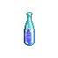

| Picture | Name | Description | What it does | Where it's from |
 |
Acid prot | A large bottle containing a viscous gelatin. | Adds acid prot disc and acid plating disc | Sdc crits |
 |
Acid pot Also known as swamp water |
A bottle containing a putrid acidic fluid | Used for brewing | Everywhere in Sdc |
 |
Crystalline shield bottle | A large crystal vial filled with a milky crystalline substance | Crystalline shield disc | Sdc cave crits |
 |
Mend Potion | A dark bottle with a red cross on the neck. | Heals some health | Sdc thumper/rockman cave crits |
 |
Constitution potion | TODO | +1 con until 25 con | Sdc thumper/rockman cave crits |
 |
TODO | A completely reflectionless vial with no visible markings. | TODO | Sdc thumper/rockman cave crits |
|
Bottles found in Sdc Gnoll Area |
||||
|
Primal ice prot bottle | A silver-white bottle with a frosty base | Light primal ice resistance disc | Gnoll caves Shop in sdc gnoll area |
 |
Primal fire prot bottle | A bright red bottle with pictures of various fire dwelling creatures | Light primal fire resistance disc | Gnoll caves Shop in sdc gnoll area |
|
Crystalline shield bottle | A large crystal vial filled with a milky crystalline substance | Crystalline shield disc | Gnoll caves Shop in sdc gnoll area |
 |
Primal lightning prot bottle | A slender bottle filled with a sparkling blue liquid | Light primal lightning resistance disc | Gnoll caves Shop in sdc gnoll area |
|
Bottles found in Sdc Solo caves area of Sdc3 |
||||
 |
Agility bottle | A silver bottle with red circles | +1 Agility until 40 Req. level 80 |
Solo caves |
|
Constitution bottle | A blue bottle with red circles | +1 Constitution until 25 | Solo caves |
 |
Strength bottle | A black bottle with red circles | +1 Strength until 18 | Solo caves |